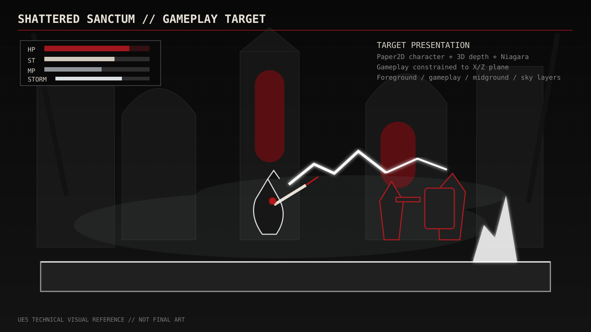
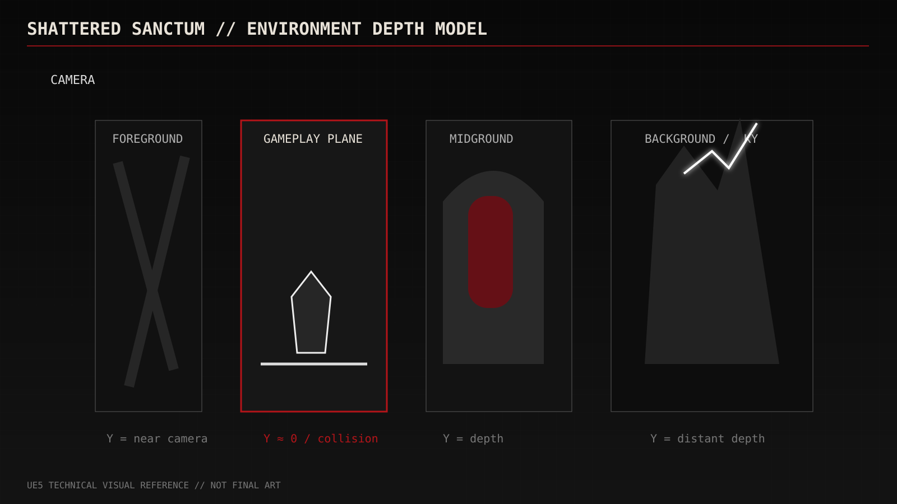
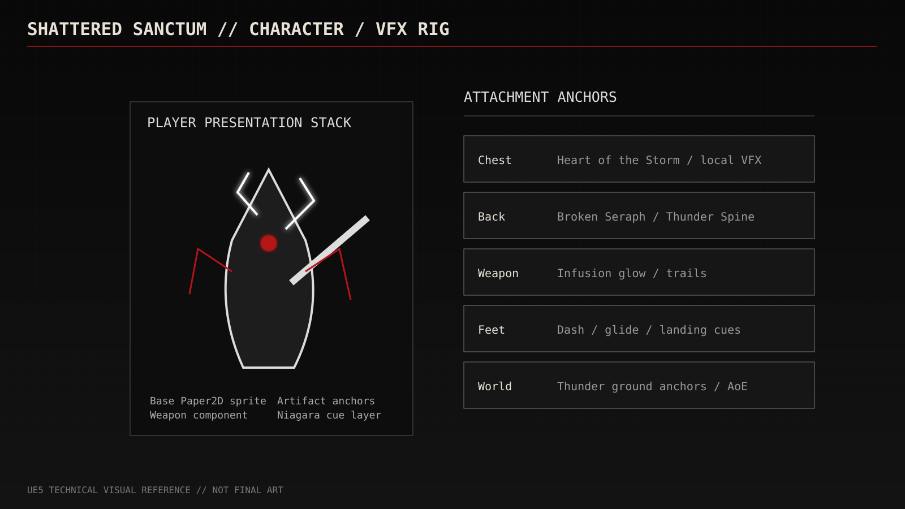
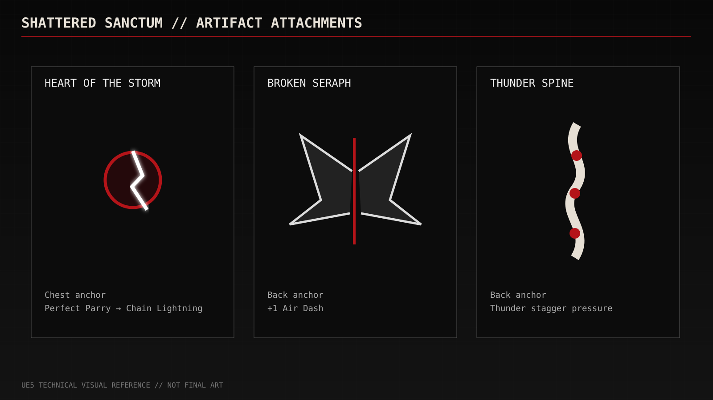
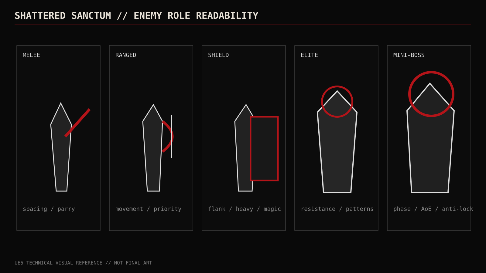
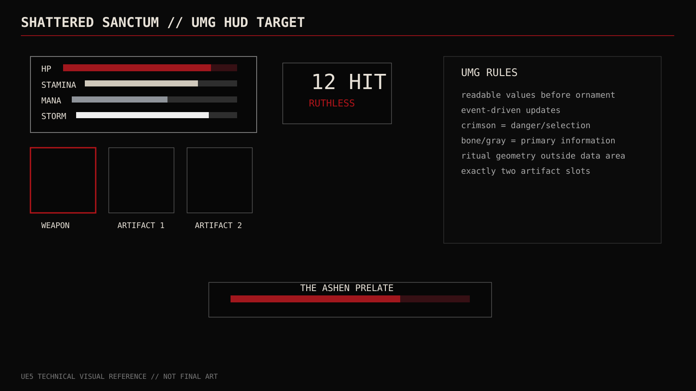
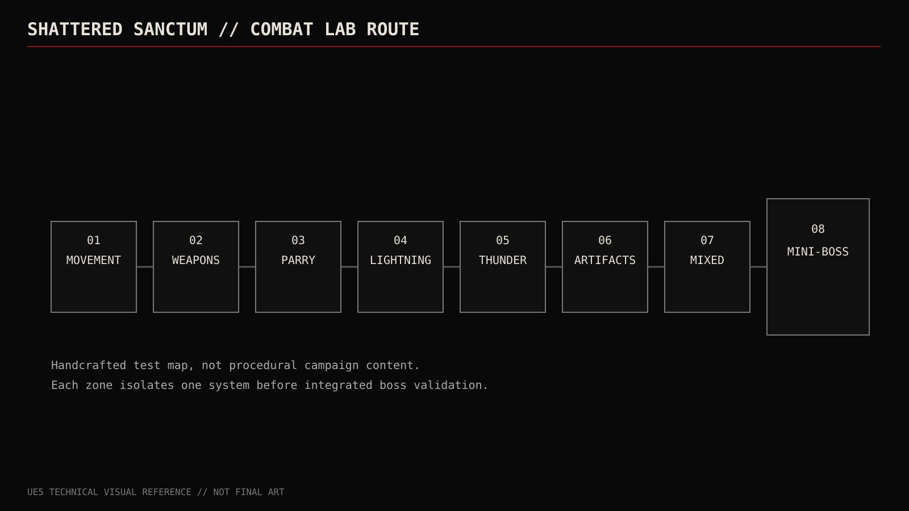

SHATTERED SANCTUM // UE5 TECHNICAL VISUAL PREVIEW
01_gameplay_target.svg

02_environment_depth.svg

03_character_rig.svg

04_artifact_attachments.svg

05_enemy_roles.svg

06_ui_layout.svg

07_combat_lab.svg
